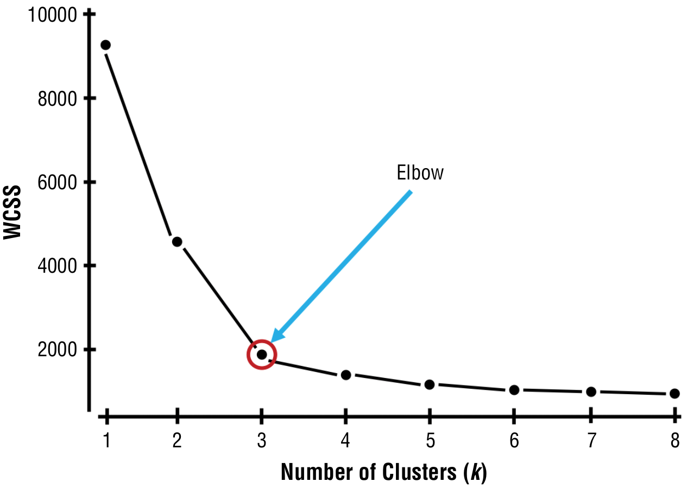
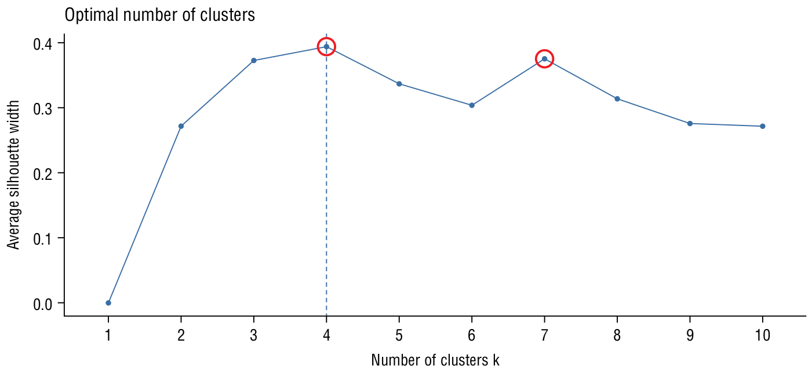
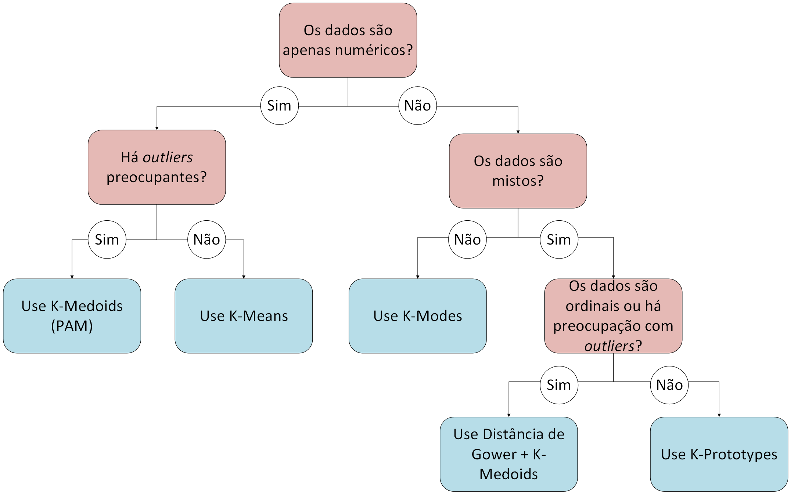

Agrupamento de Dados com k-means e Métodos Relacionados
ESTAT0109 – Mineração de Dados em Estatística
Prof. Dr. Sadraque E. F. Lucena
sadraquelucena@academico.ufs.br
http://sadraquelucena.github.io/mineracao
Objetivo da Aula
- Compreender as lógicas centrais dos algoritmos de clusterização particionada, suas medidas de similaridade e robustez;
- Decidir qual método usar diante de diferentes tipos de dados e problemas.
O que é Agrupamento?
Conceito Central
- Agrupamento (Clustering) consiste em métodos usados para particionar dados não rotulados em clusters (subgrupos) baseados em similaridade.
- É uma técnica não supervisionada que busca identificar padrões emergentes nos dados.

- Objetivos Principais:
- Alta similaridade intraclasse: Itens no mesmo cluster são muito semelhantes.
- Baixa similaridade interclasse: Itens em clusters diferentes são muito diferentes.
- Observação: Na clusterização, após criados os grupos, o usuário deve analisá-los e criar rótulos que descrevam o agrupamento gerado.
Exemplos de Aplicação
Saúde:
- Agrupar internações por idade, diagnóstico e tempo de permanência → revelar perfis clínicos de pacientes e apoiar políticas hospitalares regionais.
Finanças:
- Agrupar clientes por renda, histórico de crédito e uso de produtos → identificar perfis de risco e consumo financeiro.
Municípios:
- Agrupar cidades por indicadores socioeconômicos, educacionais e de infraestrutura → mapear padrões territoriais de vulnerabilidade.
Cada cluster representa um padrão real que surge dos dados — e a escolha do método define quão bem conseguimos enxergá-los.
Tipos de Agrupamento
A clusterização pode ser classificada por sua estrutura e regras:
Hierárquica vs. Particionada
- Hierárquica: Os clusters podem estar contidos dentro de outros clusters.
- Particionada: O limite de cada cluster é independente do outro.

Exclusiva vs. Sobreposta
- Exclusiva: Um item pertence apenas a um único cluster.
- Sobreposta: Cada item pode pertencer a um ou mais clusters.

Completa vs. Parcial
- Completa: Todos os itens devem pertencer a pelo menos um cluster.
- Parcial: Itens atípicos (outliers) podem não ser atribuídos a nenhum cluster.

Problema Central: O Protótipo
Nosso foco será em agrupamento particionado. A lógica central desses métodos é:
- Escolher \(k\) “centros” (chamados de protótipos).
- Atribuir cada ponto de dado ao protótipo mais próximo.
- Atualizar a posição de cada protótipo com base nos pontos que lhe foram atribuídos.
- Repetir os passos 2 e 3 até que os grupos não mudem mais (convergência).
Cada método de clusterização particionada é uma combinação diferente da resposta a duas perguntas:
- O que é o “protótipo”? → definição do centro (média, mediana, medoide, moda…)
- Como medir “proximidade”? → escolha da métrica de distância (Euclidiana, Manhattan, Gower…)
Mapa Mental: Que tipo de dado eu tenho?
A escolha do algoritmo e da medida de distância depende da natureza dos seus dados.
A pergunta-chave é:
- Caso 1: Meus dados são TODOS NUMÉRICOS? (Ex: Idade, Renda, Temperatura)
- Caso 2: Meus dados são TODOS CATEGÓRICOS? (Ex: Região, Sexo, Tipo Sanguíneo)
- Caso 3: Meus dados são MISTOS? (Ex: Idade, Renda, Região, Sexo)
- Vejamos como lidar com cada caso.
Caso 1: Dados Numéricos
Algoritmo Padrão: K-Means (K-Médias)
O K-means é o ponto de partida clássico para dados numéricos.
- Aplicação: Dados numéricos.
- Centro (Protótipo): A Média de todos os pontos do cluster.
- Métrica (Distância): Distância Euclidiana.
- Esta abordagem é classificada como:
- Particionada (limites independentes)
- Exclusiva (um item, um cluster)
- Completa (todos os itens são atribuídos)
- O usuário define o número de clusters (\(k\)) que o conjunto de dados terá.
K-Means: Métrica de Distância Utilizada (Euclidiana)
- A distância Euclidiana (L2) é a métrica padrão do K-means.
- Ela mede a “linha reta” entre dois pontos no espaço vetorial.
- Sejam \(a=(a_1, \ldots, a_p)\) e \(b=(b_1, \ldots, b_p)\) duas observações, então
\[ \text{dist}_E(a,b) = \sqrt{(a_1-b_1)^2 +(a_2-b_2)^2 + \cdots + (a_p-b_p)^2}. \]
Atenção!
- Padronize variáveis antes do cálculo: isto evita que uma variável (ex: Salário) domine o resultado sobre outra (ex: Idade).
- A elevação ao quadrado \((x^2)\) torna esta medida muito sensível a outliers.
K-Means: Definição do Centro (Centróide)
O centróide de um cluster obtido via K-means é a média das coordenadas de todos os pontos do cluster. \[ \text{centroide}(x,y,z) = \left( \frac{x_1+y_1+z_1}{3}, \frac{x_2+y_2+z_2}{3} \right) \]
Ponto Crítico: Como se baseia em médias, o centróide é altamente sensível a valores extremos (outliers), que podem deslocar o centro de massa do cluster.
K-Means: Funcionamento
Suponha \(k=3\).
- O algoritmo escolhe \(k\) pontos aleatórios que servem como centros dos clusters iniciais.
- O algoritmo calcula a distância (Euclidiana) de cada item aos centros e atribui o item ao cluster cujo centro está mais próximo.

K-Means: Funcionamento
- Após atribuir cada item a um cluster, o algoritmo calcula o novo centróide (a média) de cada cluster formado.
- O algoritmo recalcula a distância de cada item a cada novo centróide e o reatribui ao cluster mais próximo.
K-Means: Funcionamento
- O processo de atribuição e avaliação é repetido, com novos centróides calculados para cada cluster e cada item é reatribuído ao cluster mais próximo.

K-Means: Funcionamento
Em algum momento, os centróides não mudarão mais de lugar e não resultarão em novas atribuições.
- Nesse ponto dizemos que o algoritmo convergiu e o processo é interrompido.

Ponto Fraco do K-Means: Outliers
- O K-Means minimiza a soma dos quadrados das distâncias (associado à Distância Euclidiana L2).
- O centróide (baseado na média) é o ponto de equilíbrio.
- Um único outlier age como um “peso” muito grande, “puxando” o centróide em sua direção, pois sua grande distância é elevada ao quadrado.
- Precisamos então de alternativas robustas quando há outliers nos dados.
Solução Robusta 1: K-Medians (K-medianas)
- Aplicação: Dados numéricos com outliers.
- Centro (Protótipo): A Mediana de cada variável. O centro é calculado.
- Métrica (Distância): Distância de Manhattan (L1).
- Vantagem: A Mediana é muito mais robusta a outliers do que a Média.
K-Medians: A Métrica Métrica de Distância Utilizada (Manhattan)
- A distância de Manhattan (L1) mede a distância como sendo a soma das diferenças absolutas (“caminho dos quarteirões”).
- Sejam \(a=(a_1, \ldots, a_p)\) e \(b=(b_1, \ldots, b_p)\) duas observações, então
\[ \text{dist}_M(a,b) = |a_1-b_1| + |a_2-b_2| + \cdots + |a_p-b_p|. \]
Por que é robusta?
- Não eleva as diferenças ao quadrado.
- Diferenças grandes (causadas por outliers) têm um peso linear, e não quadrático.
- O K-Medians, ao usar L1, é naturalmente menos afetado por pontos extremos.
Solução Robusta 2: K-Medoids (PAM)
- Aplicação: Dados numéricos com outliers.
- Centro (Protótipo): Um Ponto Real (o medoide). O centro é eleito.
- Métrica (Distância): Qualquer uma!
- Como o centro é eleito? O medoide é o ponto real cuja distância total aos demais pontos do seu cluster é a mínima. \[ \text{medoide} = \arg\min_{x_i \in C} \sum_{x_j \in C} d(x_i, x_j) \]
O método também é chamado de PAM (Partitioning Around Medoids – Particionamento em Torno de Medoides)
K-Medoids vs. K-Medians: A Vantagem (Interpretabilidade)
| K-Medians (Centro Calculado) | K-Medoids (Centro Real) |
|---|---|
| O centro é a mediana de cada variável. | O centro é um ponto real dos dados. |
O protótipo (med_x, med_y) pode não existir na sua base de dados. |
O protótipo é, por exemplo, o Cliente B (ID 456). |
| Interpretação (Fraca): “O Cluster 1 representa clientes com idade mediana de 25 e salário mediano de R$ 1200.” | Interpretação (Forte): “O Cluster 1 é representado pelo Cliente B, que tem 25 anos e salário de R$ 1200.” |
K-Medoids vs. K-Medians: A Vantagem (Flexibilidade)
K-Medians está intrinsecamente ligado à otimização da Distância Manhattan (L1).
K-Medoids pode usar QUALQUER medida de distância:
- Distância Euclidiana (L2)
- Distância Manhattan (L1)
- Distância de Gower (para dados mistos - vamos ver adiante!)
Isso torna o K-Medoids a ferramenta mais poderosa e flexível para dados complexos.
Resumo: Clusterização de Dados Numéricos
| Comparação | K-means | K-medians | K-medoids |
|---|---|---|---|
| Centro | Média | Mediana | Ponto real (medoide) |
| Distância | Euclidiana (L2) | Manhattan (L1) | Qualquer (Gower!) |
| Robustez* a outlier | Baixa | Média | Alta |
| Ponto real? | Não (calculado) | Não (calculado) | Sim (eleito) |
| Quando usar | Dados numéricos limpos | Dados numéricos com outliers | Dados com outliers ou mistos |
Caso 2: Dados Categóricos
O Problema com Dados Categóricos
- Problema: Agrupar dados como (Sexo, Região, Plano de Saúde).
- Métricas como a Distância Euclidiana ou de Manhattan não funcionam. Não podemos calcular algo como:
\[ \sqrt{(\text{'Nordeste'} - \text{'Sul'})^2 + (\text{'Público'} - \text{'Privado'})^2} \]
- Precisamos de uma métrica e um centro que funcionem para categorias.
A Métrica: Distância de Hamming (ou Dissimilaridade Simples)
- A Distância de Hamming é usada quando todas as variáveis são categóricas (nominais).
- Ela mede quantas categorias diferem entre duas observações.
- Sejam \(a=(a_1, a_2, \ldots, a_p)\) e \(b=(b_1, b_2, \ldots, b_p)\) duas observações, então \[ \text{dist}_H(a,b) = I(a_1\neq b_1) + I(a_2\neq b_2) + \cdots + I(a_p\neq b_p) \] em que \(I(a_i\neq a_i) = 1\) se as categorias forem diferentes, e 0 se forem iguais.
Distância de Hamming: Exemplo
| Atributo | Paciente A | Paciente B | Diferença |
|---|---|---|---|
| Sexo | M | F | 1 |
| Região | Nordeste | Nordeste | 0 |
| Tipo de Plano | Público | Privado | 1 |
| Total | 2 |
- Distância Hamming = 2 (duas categorias diferentes).
Algoritmo para Dados Categóricos: K-Modes
O K-modes é uma extensão do K-means para dados puramente categóricos.
Aplicação: Dados Categóricos (nominais).
Centro (Protótipo): A Moda de cada variável (o modo).
Métrica (Distância): Distância de Hamming.
K-Modes: O Centro (Modo)
No K-modes, o protótipo (centro) do cluster não é uma média, mas sim o vetor das categorias mais frequentes (a moda) encontradas no cluster.
Exemplo de Cálculo do Modo (Protótipo) para um Cluster:
| Variável | Membros do Cluster | Moda (Centro) |
|---|---|---|
| Região | Nordeste, Nordeste, Sul, Nordeste, Sudeste | Nordeste (3/5) |
| Plano | Público, Privado, Público, Público, Privado | Público (3/5) |
| Sexo | M, F, F, M, F | F (3/5) |
- O protótipo (modo) deste cluster é o vetor:
("Nordeste", "Público", "F"). - O algoritmo atribui novos pontos com base em quantas categorias eles diferem deste protótipo (Distância de Hamming).
K-Modes: Vantagens e Limitações
- Uso:
- Bases com apenas variáveis nominais (ex.: diagnóstico primário, modalidade de serviço, ocupação).
- Vantagens:
- Rápido e simples.
- Interpretação direta (o “perfil modal” de cada cluster é muito claro).
- Limitações:
- Não trata variáveis numéricas (ex: Idade).
- Não trata variáveis ordinais de forma natural (ex: Escolaridade).
Caso 3: Dados Mistos
O Problema com Dados Mistos
- Problema: Agrupar itens usando variáveis numéricas e categóricas como Idade, Renda, Gênero, Região.
- Nesses casos K-Means e K-Modes falham. Precisamos de soluções híbridas.
- Temos duas estratégias principais:
- Robusta (Gower + K-Medoids): Usa um algoritmo robusto com uma métrica de distância flexível.
- Rápida (K-Prototypes): Usa um algoritmo híbrido que combina K-Means e K-Modes.
Solução 1 (Robusta): Gower + K-Medoids
Usamos como métrica a Distância de Gower
A Distância de Gower é usada quando os dados são mistos: variáveis numéricas, categóricas, binárias ou ordinais.
Resulta em valores entre 0 e 1 (0 = iguais, 1 = completamente diferentes).
A dissimilaridade entre duas observações \(i\) e \(j\) com \(p\) atributos é dada por: \[ D_{ij} = \frac{w_{ij1} d_{ij1} + w_{ij2} d_{ij2} + \cdots + w_{ijp} d_{ijp}}{w_{ij1}+ w_{ij2} + \cdots + w_{ijp}}, \] em que \(w_{ijk}\) é o peso (geralmente 1) e \(d_{ijk}\) é a dissimilaridade para o \(k\)-ésimo atributo:
- se o atributo é categórico ou binário, \(d_{ijk} = I(x_{ik}\neq x_{jk})\);
- se o atributo é numérico, \(d_{ijk} = 1 - \frac{|x_i-x_j|}{R_k}\), sendo \(R_k\) a amplitude (max-min) da variável \(k\).
Solução 1 (Robusta): Gower + K-Medoids
- Aplicação: Dados Mistos.
- Centro (Protótipo): Ponto Real (medoide).
- Métrica (Distância): Distância de Gower.
Como K-Medoids funciona com qualquer matriz de distância, fazemos o seguinte:
- Calculamos a matriz de dissimilaridade \(N \times N\) entre todos os pontos usando Gower.
- Fornecemos essa matriz ao algoritmo K-Medoids (PAM).
- O K-Medoids elegerá os pontos reais mais centrais com base nessa distância mista.
Gower + K-Medoids: Vantagens e Limitações
Vantagens:
- A solução mais robusta e flexível.
- Trata todos os tipos de variáveis (numéricos, categóricos, ordinais) corretamente.
- Robusto a outliers (medoide é ponto real).
- Interpretação ótima (medoide = observação representativa).
Limitações:
- Custo Computacional: A matriz de Gower \(N \times N\) pode ser custosa (memória e tempo) para datasets com N grande (ex: N > 10.000).
- Complexidade elevada (O(\(N^2\))): o tempo de execução ou o uso de memória cresce quadraticamente conforme o número de observações aumenta.
Solução 2 (Rápida): K-Prototypes
- O K-prototypes une K-means (para variáveis numéricas) e K-modes (para variáveis categóricas).
- Aplicação : Dados Mistos.
- Centro (Protótipo): Híbrido!
- Média para variáveis numéricas.
- Moda para variáveis categóricas.
- Métrica (Distância): Híbrida (Euclidiana + Hamming).
K-Prototypes: A Métrica Híbrida
- A distância é uma soma ponderada das distâncias numéricas e categóricas.
- \(\text{dist}(a, b) = \sum (a_i - b_i)^2 + \gamma \sum I(a_j \neq b_j)\)
- \(\sum (a_i - b_i)^2\): Parte Numérica (Dist. Euclidiana ao Quadrado)
- \(\sum I(a_j \neq b_j)\): Parte Categórica (Dist. Hamming)
- \(\gamma\): Um peso (parâmetro) que define a importância da parte categórica.
Vantagens:
- Escala bem: Não precisa de matriz N×N. Excelente para grandes bases mistas.
- Interpretação direta (protótipo = perfil de médias + modas).
Limitações:
- A parte numérica (K-Means) ainda é sensível a outliers.
- Variáveis ordinais são tratadas como categóricas (perda de ordem).
- O parâmetro \(\gamma\) exige ajuste/escolha.
Módulo 5: Escolhendo o número de \(k\)
Como definir o número de clusters (escolher \(k\))?
- Suponha que escolhemos o método (ex: K-Means). Mas quantos clusters (\(k\)) devemos criar?
- \(k=2\)? \(k=3\)? \(k=10\)?
- Esta é a pergunta mais comum em agrupamento.
- Não há uma resposta única “correta”, mas sim métodos que ajudam a encontrar um \(k\) “ótimo”.
- Veremos três dos mais usados:
- Método do Cotovelo (Elbow Method)
- Método da Silhueta Média (Average Silhouette)
- Estatística Gap (Gap Statistic)
Método 1: Cotovelo (Elbow Method)
- A ideia é testar vários valores de \(k\) e calcular a Soma dos Quadrados Intra-clusters (Within-Cluster Sum of Squares, \(WCSS\)).
- \(WCSS\) mede a compactação (homogeneidade) total dos clusters. \[ WCSS_k = \sum_{\text{cluster } 1} \text{dist}(P_i, C_1)^2 + \sum_{\text{cluster } 2} \text{dist}(P_i, C_2)^2 + \cdots \]
- Quanto mais \(k\), menor o \(WCSS\) (naturalmente, \(WCSS=0\) se \(k=N\)).
- Procuramos o \(k\) onde a redução do \(WCSS\) começa a diminuir drasticamente: o “cotovelo” da curva.
- É o ponto de equilíbrio: aumentar \(k\) não traz melhora significativa.
Método 1: Cotovelo (Elbow Method)
Método 2: Silhueta Média (Average Silhouette)
- Mede o grau de coesão e separação dos clusters. Avalia o quão bem cada item está posicionado.
- Para cada observação \(i\), calcula-se \(S(i) = \frac{b(i) - a(i)}{\max\{ a(i), b(i) \}}\)
- \(a(i)\): distância média de \(i\) aos pontos do mesmo cluster (coesão).
- \(b(i)\): distância média de \(i\) aos pontos do cluster vizinho mais próximo (separação).
- \(S(i)\) varia de -1 a 1:
- \(\approx 1\): Item bem ajustado (ideal).
- \(\approx 0\): Item na fronteira entre clusters.
- \(< 0\): Item provavelmente no cluster errado.
- O \(k\) ótimo é aquele que maximiza a Silhueta Média de todas as observações.
Método 2: Silhueta Média (Average Silhouette)
Método 3: Estatística Gap
- Compara a dispersão observada (\(WCSS_k\)) com a dispersão esperada sob uma distribuição de referência aleatória (sem clusters).
- A ideia é: \(k\) é bom se a compactação dos nossos clusters for muito melhor do que uma compactação aleatória.
- Para cada \(k\), calcule \(\log(WCSS_k)\) dos dados originais.
- Gere \(B\) amostras aleatórias (uniformes) e calcule a média de \(\log(WCSS^{*b}_k)\).
- A Estatística Gap é a diferença: \[ Gap(k) = E[\log(WCSS^{*b}_k)] - \log(WCSS_k) \]
- Procuramos o \(k\) que maximiza o \(Gap(k)\).
Método 3: Estatística Gap

Para definir o algoritmo de agrupamento
- E para encontrar \(k\), use métodos de validação como Cotovelo (WCSS), Silhueta ou Estatística Gap.
Agora vamos fazer no R…